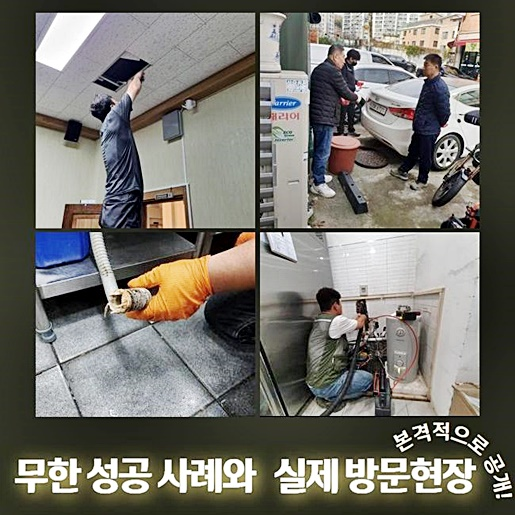
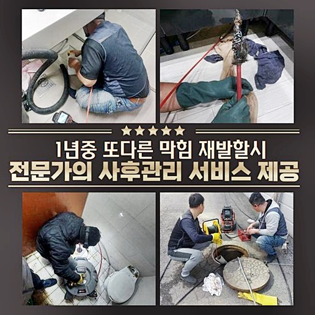
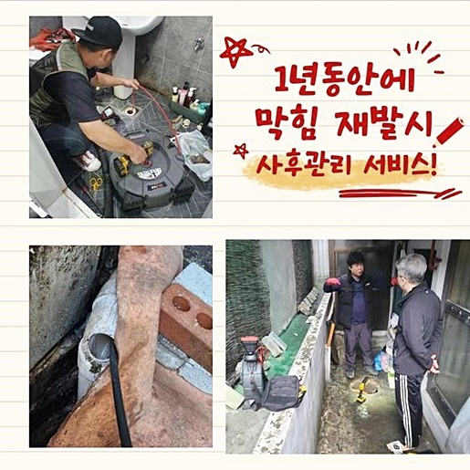
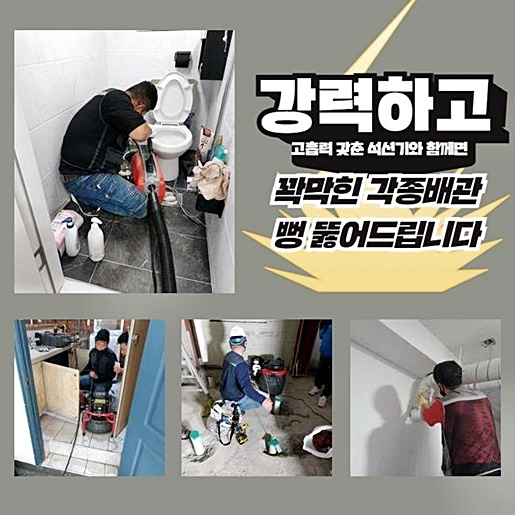
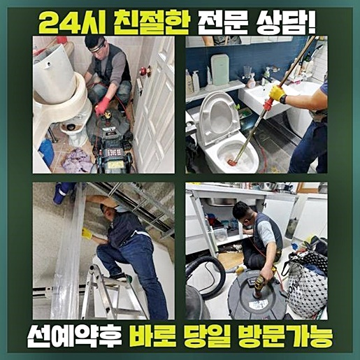
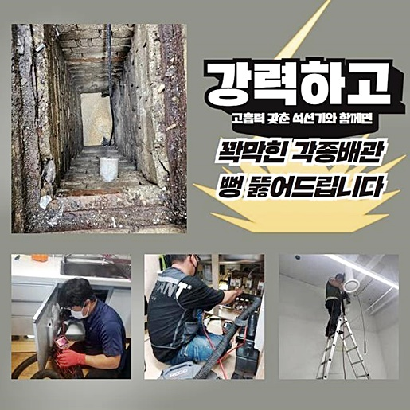

🏠 성남 이매동화장실역류 백현동 하수구뚫는비용 해결방법
성남 변기막힘 전문 시공 후기

📋 작업 개요
- 위치: 성남
- 서비스 유형: 변기막힘, 하수구막힘, 배관막힘, 역류해결, 뚫는업체, 배관청소, 고압세척, 설비공사
- 작업 일시: 2024. 6. 9. 10:35
- 업체명: 하수구수사대 (010-5615-2118)
🔍 문제 상황
성남 이매동화장실역류 백현동 하수구뚫는비용 해결방법
목욕을 하신다거나 당연하게도 빠지는 잔여물이 비로소 거름망으로 자리하게됩니다
머리카락들을 제거치않은채 설비를 쓰게되면 내부에 쌓인 잔여물이 엉켜서 딱딱하게 고착화되고 통수과정을 방해하게 됩니다
오늘에서는 머리카락이 들어가 막혀버린 장소에서 해당 문제들을 완벽하게 해결한 현장을 말씀드릴게요
의뢰인분은 배수관이 막혀버려 찾아주셨던 분이였습니다
의뢰인분은 오전에 출근을 하려고 화장실로 들어가셨는데 하수시설로 빠지지를 않게되는 문제들이 발생되어 빠르게 문의하셨대요
일상을 영위하다가 물빠짐이 안되어 피해들을 감내해야된다면 당연스럽게도 곤혹스러움을 느낄텐데요
스스로 대처하기 힘든 사태는 실력있는 전문가들의 조치로서 작업들을 이어가는것이 합리적이기때문에 조속히 전화해보세요!
우선 증세들의 까닭을 알아보기로 했습니다
내시경라인을 내측으로 밀어넣고 어떠한 양상을 띄는지 주시해요
내시경장비는 선들이 두껍지않게 만들어진 도구로 심층부까지 제대로 들어가는게 용이한데요
깊숙한 지점의 어떤 모습인지 살펴보니 잔해물과 석회이물들이 벽측에도 퇴적된 모습이였는데요

🔎 원인 분석
💡 전문가 진단: 정밀 진단 장비를 사용하여 슬러지의 고착 여부를 판명하고 타격/세척 작업을 실시했습니다.
석회성분은 무엇인지 잘모르시는 고객들도 있으실거에요
석회의 이물은 욕실공간을 공사할때 이용했던 방수액체나 폐기물 실리콘 등이 흐르면서 낡게되고 부식되면서 가루같은것이 배관속에 누적되는 배수장애 요소의 대표적인 녀석이라 볼수있어요
잘 생각해보면 석회성분의 경우 대체로 예방할 수 있는 이물질이라 함은 아니랍니다
석회이물은 어떤데서는 안보이는 경우들이 있으며 어느곳에선 배수관에 심하게 누적되는 사례도 있어요
건축물의 시공시기와 다양한 방면과 관련하여 석회성분의 생성가능성은 달라지기마련입니다
그러므로 알 수 없는 이유로 생긴 이물이 하수관내부서 계속해서 시간이 지날수록 돌멩이들처럼 고착됩니다
석회이물은 지속적으로 비위생적 환경을 조성해 악취들을 발생케합니다
고객분도 지금까지 냄새때문에 스트레스를 받으셨다고 했는데 알거같았죠
머리카락뭉치와 이물을 청소하기이전 굳어진 석회이물을 수월하게 제거하도록 만들어주기 위해 중화제를 부어주고 어느정도 기다려주는데요
중화제는 산성을 띄는 약품인데 석회이물과 반응하여 석회들이 유하게 해주죠
반응들이 충분할때 비로소 청소되는 이물도 존재하지만 잔존하는 잔해물의 양이 많아서 배수관세척으로 깊숙한 지점까지 세척해주어야 되죠
약품을 이용하고 약간의 시간들이 지날때까지 보고있다면 반응들이 솟구치게되죠

🔧 작업 과정
반응이 올라오면 석회들이 꽤 중화되었다고 생각해도 되죠
유화되었을 때 샤프트장치로 제거에 박차를 가하면 제대로 문제를 바로잡을 수 있답니다
꾸준한 청소를 해주어 내측의 석회를 없애주었어요
우리가 여지껏 의도치않게 흘리는 잔여물이나 머리카락까지 의외로 정말 많은데요
잔해물이 차차 통로들을 좁게만들고 배출될 자리도 막게되면서 증상이 야기됩니다
샤프트도구의 헤드쪽엔 체인뭉치의 부속이 장착되어있죠
노커부분이 하수관을 지나가면서 잔해들을 청소하는 방식인데요
머리카락과같이 세척이 만만치않은 잔여물도 온전히 시정가능하기에 문제를 시정해줄때 절대적으로 있어야되는 장비죠
청소를 해보니 머리카락등이 사슬에 엉키게되어 나왔어요
머리카락뭉치는 가늘기에 배수관으로 배출되는 사례가 많습니다
때문에 세안을 하시거나 목욕 후엔 머리카락들을 별도로 쓰레기통에 버려주실것을 권장드립니다
종종 변기속으로 투입하는 고객님도 보이는데 해당 행동들도 문제들의 이유로 자리잡으니 지양해주시는 것이 좋습니다
마지막엔 석션기기로 배수관 내측에 머리카락들과 제거되지못한 이물을 배출시켰습니다
석션장치의 경우 무선청소장비들과 같이 군데군데있는부에 잔여물을 배출해내 마무리하는 역할까지 맡고있어요
수리를 할 시 마무리처럼 필히 요구되는 작업이죠
심하지않은 문제여도 여러가지의 기기와 실력이 있어야하겠습니다
전문가들을 물색하실때에는 작업에 걸맞는 장치를 보유했는가 성공사례는 어떠한지 대조해보시고 결정하시면 좋은 서비스를 볼 수 있어요
모든 잔해들을 세척한 다음 내부 상태 진단을 거치니 깔끔한 상태를 보았습니다
작업 초 석회들로 배수되지않던 배수관들이 본래대로 돌아왔어요
빈틈없이 세척들이 되고서는 튀어버린 오염물까지 정리해주고 작업을 마무리합니다


✅ 작업 완료
화장실이라면 바닥과 변기시설 여러가지의 시설물이 자리잡고 있어서 막혀버리는 증상이 반복해서 생깁니다
여러분들이 신경써서 관리하는게 1순위에요 만일 냄새자체가 심하거나 물이 오차없이 배출되지않으면 업체에게 의뢰를 해서 검수를 받아 보는 것도 좋습니다
만일 해결이 필요할 경우 때에 관여치않고 전화번호를 통해 의뢰해보세요
깨끗한 작업들을 진행해 고객님이 염려할게 없게끔 진행해드리니 부담없이 연락한다면 신속하게 도울게요!
배수관막힘은 방치한다면 생각보다 심각수준으로 발전되니 저희전문진들과 헤쳐나가보아요!




⚠️ 하수구 배관 막힘 예방 및 관리 가이드
- ✅ 머리카락, 비닐, 물티슈 등 물에 분해되지 않는 이물질은 하수구 유입을 절대 금지해 주세요.
- ✅ 하수구 거름망을 씌우고 모여진 이물질은 주기적으로 쓰레기통에 바로 비워주셔야 합니다.
- ✅ 배관 노후가 심할 경우 이물질이 더 쉽게 걸리므로 주기적인 배관 세척(고압세척 등)을 권장합니다.
- ✅ 작업 후 1년 이내 재발 시 하수구수사대에서 무상 A/S 보증 서비스를 제공합니다.
💡 핵심 정리
- 확실한 장비 작업(내시경 점검 및 샤프트 스케일링)으로 원인을 뿌리 뽑습니다.
- 작업 후 1년 이내에 동일한 부위 재발 시 100% 무상 A/S 서비스를 보장합니다.
- 서울 · 경기 · 인천 전 지역에 24시간 언제든 긴급 출동할 수 있도록 항시 대기 중입니다.
❓ 자주 묻는 질문 (FAQ)
🚨 성남 변기막힘 문제로 고민이신가요?
정확한 원인 진단과 확실한 시공으로 재발 없는 해결을 약속드립니다.
24시간 긴급 출동 | 서울 · 경기 · 인천 전지역 | 1년 내 재발 시 무상 A/S